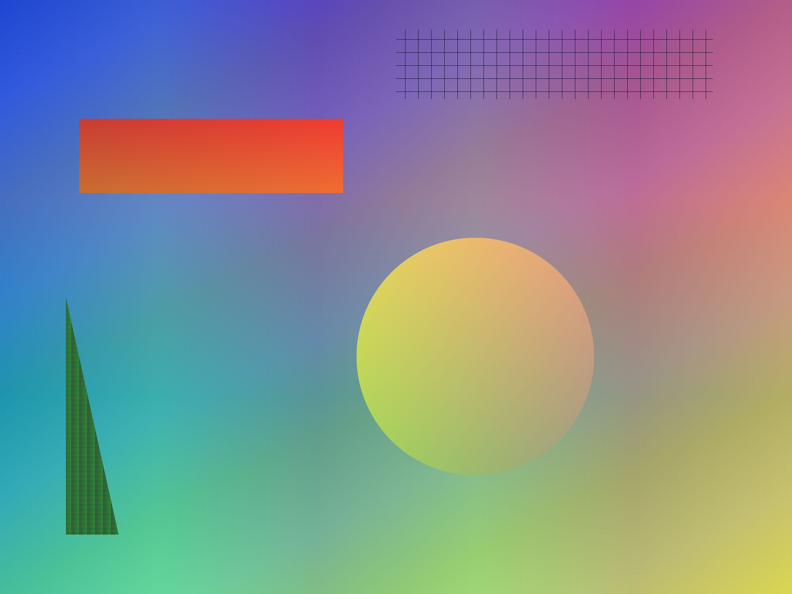
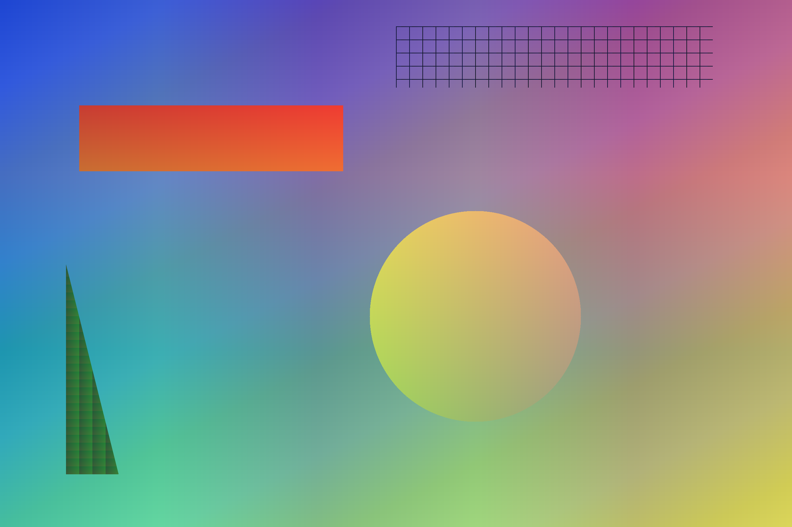

Converted images

large.jpg, reduced to 300 ppi and then converted.

large.png, reduced and then converted.
alpha.png, 8-bit RGB with alpha.
deep-alpha.png, 16 bits with alpha.
grey.png, one grey channel.
palette-trns.png, expanded to its colours.
icc.jpg, read through its own profile.
cmyk-adobe.jpg, left alone.